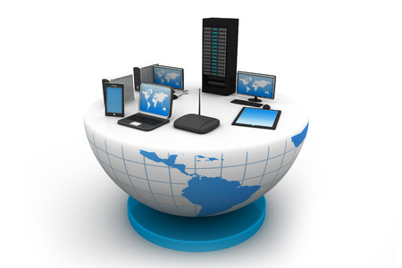
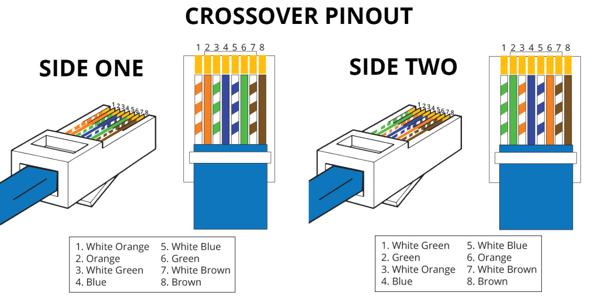

A continuación encontrarás las definiciones de las principales palabras y expresiones relacionadas con la asignatura de Concepto de Redes Y Comunicaciones
Definición de red informatica
Una red informatica está constituida por un conjunto de ordenadores y otros dispositivos, conectados entre si, con el objetivo de compartir unos determinados recursos.
Éstos pueden ser aparatos (hardware), como impresoras, sistemas de almacenamiento, etc., o programas (software), que incluyen aplicaciones, archivos, etc.
Los elementos de los que consta cualquier red de ordenadores son el emisor y el receptos, que en informatica se denominan host, y el canal de comunicación, pudiendo ser este por medios guíados (cables) o no guiados (inalámbrica). Dado que la informacion que se transmite está codificada, son necesarios también codificadores y decodificadores.
Tipos de Redes
Se denominan segun su alcance o extensión de las redes:
Redes PAN:son redes de interconexión de quipos personales, como portatiles, teléfonos móviles, cadenas de sonido,PDA normalmente utilizan una conexión inalámbrica tipo bluetooth.
Redes LAN:son redes de corto alcance (hasta unos 200m), de equipos ubicadopos dentro de un edificio u oficina. Suelen er las más frecuentes.
Redes LAN (Metropolitan Area Network):Son aquellas que se extienden por una ciudad o municipio incluso con edificios no adyacentes.
Redes WAN:Son redes de alcance global, dando servicio a un pais o continente. La red WAN por excelencia es internet.
Transmisión por cable
Cable de par trenzado:es mas utilizado en redes LAN. Utiliza pares de cables de colores entrelazados entre si, con el objetivo de evitar intreferencias entre si.
Existen dos tipos; el cable de par trenzado NO apantallado (UTP), y el cable de par trenzado apantallado (FTP,STP y SFTP).
El apantallamiento no es más que una "camisa" de una malla de aluminio que arrolla a los pares de cables, con el fin de evitar interferencias.
Según el número de pares trenzados y la longitud, se define diferentes categorias de cables (CAT) que proporcionan diferentes velocidades de transmisión.
CAT1 y CAT2 con 1 y 2 pares de cables respectivamente, se utilizan para telefonía (voz), y CAT5 y CAT6, con 4 pares de cables, se usa en redes Ethernet, proporcionando diferentes velocidades de transmisión.
Como conector se utiliza el RJ45, cable de CAT5 o CAT6 (depdendiendo de las caracteristicas de los cables).
Fomr as en las que puedo conectar los colores de un cable en un conector RJ45.
Transmisión inalámbrica
Existen varias tecnologías para la transmiión inalámbrica. Es importante hablar previamente del espectro electromagnético, puesto que todas estas transmisiones utilizan ondas.
Transmisión WiFi.
Utiliza ondas de radio. Los valores de frecuencia, alcance, estan definidos en la especificación IEEE 802.11.
| Estándar | Frecuencia | Velocidad | Alcance |
|---|---|---|---|
| IEEE 802.11B | 2,4 GHz | 54 Mbps | 460m |
| IEEE 802.11g | 2,4 GHz | 54 Mbps | 460m |
| IEEE 802.11n | 2,4 GHz y 5 GHz | 600 Mbs | 820m |
| IEEE 802.11ac | 2,4 GHz y 5 GHz | 1,300 Mbps | - |
transmisión bluetooth.
Utiliza tambien frecuencias de radio a una frecuencia de 2,4 GHz Dado que es la misma que la WiFi, para evitar interferencias , Bluetooh utiliza la tecnologia de saltos de frecuencia.
Esto cambia la frecuncia de Bluetooh en incrementos de 1 Megahertz 2,4-2,485 a un punto donde la interferencia es más bajo.
Alcanza distancias de entre los 90m (bluetooh clase1) a los 90cm (bluetooh clase3).
Las velocidades de transmisión de datos es de unos 24 Mbs con el bluetooth 3.0.
Transmisión por infrarojos.
Las redes por infrarrojos. permiten la comunicación entre dos nodos usando una serie de leds infrarrojos.
Se trata de emisores/receptores de las ondas infrarrojos entre ambos dispositivos, cada dispositivo necesita "ver" al otro para realizar la comunicacion por ello es escasa su utilización a gran esacala; Esa es su principal desventajas, a diferencia de otros medios de transmisión.
La distancia de transmisión es baja, de 1-1,5 m con unas velocidades que oscilan entre los 10 kbs y los 4 Mbs.
El modelo OSI
El modelo OSI de interconexión de sistemas abiertos (OSI):es un modelo conceptual creado por la Organización Internacional de Normalización que permite que diversos sistemas de comunicación se conecten mediante protocolos estándar.
En terminos sencillos, la Osi proporciona un estándar para que diferentes sistemas informáticos puedan comunicarse entre sí.
El modelo OSI puede verse como un lenguaje universal para las redes de computadoras. Se basa en el concepto de dividir un sistema de comunicación en siete capas abstractas, cada una apilada sobre la última.
Cada capa del modelo OSI hace un trabajo específico y se comunica con las capas superiores e inferiores.

Las especificaciones IEEE 802
Dependiendo del medio fisico que se utilice para interconectar los distintos elementos de un red, ésta recibe una determinado denominación siguiendo las normas especificadas por Institute of electrical and electrnocis Engineers (IEEE).
Este organismo define y ordena las distintas formas de concetar los ordenadores entre sí.
En febrero de 1980 el IEEE conceto una parte de modelo OSI desarrollando lso niveles 1 Y 2 que son los más físicos.
De ahí nació el estándar IEEE 802 (Año 80 Mes 2). Este proyecto se divide en varias ramas o comités y cada comité se ocupa de las distintas redes que se han ido apareciendo en funcion del medio de transmisión, la topologoía física y la forma en la que se envían los datos por ese medio.
Otras especificadores de la norma 802 son:
IEEE 802.6 Redes de área metropolitana (MAN).
IEEE 802.11 Red local inalámbrica (WI-FI).
IEEE 802.15 Red de área personal inalámbrica (Bluetooh).
IEEE 802.16 Acceso inalámbrico de banda ancha (WIMAX).
Modelo TCP/IP
En informartica y telecomunicación, un protocolo de comunicaciones es un conjunto de reglas y normas que permiten que dos o más entidades de un sistema de comunicación se comuniquen entre ellos para transmitir información por medio de cualquier tipo de variación de una magnitud física.
Se trata de las reglas o el estándar que define la sintaxis, semántica y sincronización de la comunicación, así como posibles métodos de recuperación de errores.
Los prótocolos pueden ser implementados por hardware, software, o una combinación de ambos.
El Protocolo TCP/IP
En ocasiones se le denomina conjunto de protocolos TCP/IP, en referencia a los dos protocolos más importantes que la componen: Protocolo de Control de Transmisión (TCP) y Protocolo de Internet (IP), que fueron dos de los primeros en definirse, y que son los más útilizados de la familia.
Direcciones IP
La dirección IP
Más adelante veremos que hay dos tipos de direcciones IP; Las IPv4 e IPv6.
Nos vamos a referir sólo a estas primeras.
El número Ip está formado por un conjunto de 4 cifras 0 y 255. Por ejemplo:195.135.165.34
Cada dígito decimal corresponde con un valor bianrio que es el que realmente se transmite. Por ejemplo: La dirección IP anterior quedaría en binario de la siguiente forma:11000011.11101011.10100101.00100010.
Direcciones IPv4 e IPv6
El IPv4 utiliza un esquema de direcciones de 32 bits que permite almacenar 2^32 direcciones(4.19 mil millones de direcciones). El aumento de los usuarios finales conectados a internet ha provocado que se agoten las direcciones IPv4.
El IPv6 se implemento en el año 1999 como respuesta a la demanda de direcciones IP, las cuales en su momento excedían el suministro disponible. Esta version permite la comunicación y la transferencia de datos a través de una red. El IPv6 es una direccion Ip de 128 bits que adminten 2^128 direcciones de internet total.
La tarjeta de red
Una tarjeta de red no es más que una tarjeta que se inserta en una ranura de expasión y que permite la conectividad a una red LAN de forma alámbrica mediante un cable Ethernet(con conector RJ45) o de forma inalambrica por WiFi.
La diferencia entre estas tarjetas de red y las actuales es que las actuales están integradas en la placa base y no insertadas en una ranura de expansión, pero su función y propiedades son las mismas.
Una característica fundamental de las tarjetas de red es su dirección MAC.
La dirección MAC es un identificador único que cada fabricante le asigna a la tarjeta de red (Media Access Control).
Las direcciones MAC están formadas por 48 bits representados generalmente por dígitos hexadecimales. Como cada hexadecimal equivale a cuatro binarios (48:4=12), la direccion acaba siendo formada por 12 dígitos agrupados en seis parejas separadas generalmente por dos puntos, aunque también puede haber un guión o nada en absoluto. De esta manera, un ejemplo de direccion MAC podria ser 00:1e:c2:9e:28:6b.
El cableado estructurado
El cableado estructurado no es más que el conjunto de cables, conectores, dispositivos, canalizaciones, armarios,etc. Que contituyen toda la infraestructura de red local de un edificio, oficina, y cuya función es la de transportar toda la información entre todos los dispositivos que se pretenden conectar (PCs, impresonras, telefonos, ETC).
Destacab un cableado horizontal, un cableado vertical y un cuarto de comunicaciones.
Cableado Horizontal
Este es el encargado de llevar la información desde el distribuidor de piso hasta los usuarios.
Cableado vertical
El cableado vertical, también conocido como backbone o cableado troncal, es el encargado de crear interconexiones entre los cuartos de equipo, cuartos de entrada de servicios y cuartos de telecomunicaciones.
Este está formado por cables verticales, conexiones cruzadas principales e intermedias, terminaciones mecánicas y cordones de parcheo para conexiones cruzadas.
Cuarto de telecomunicaciones
Consiste en el área física destinada exclusivamente para el alojamiento de los elementos que conforman el sistema de telecomunicaciones.
En este cuarto se encuentran conmutadores y todos los elementos centralizados que corren a través de tramos horizontales hasta el área de trabajo.
Bibliografía
Implika. (2023, febrero 20). Qué son las redes informáticas y cómo funcionan. Implika. https://www.implika.es/blog/que-son-redes-informaticas
Alestra. (s/f). Alestra.mx. Recuperado el 25 de octubre de 2023, de https://www.alestra.mx/blog/los-diferentes-tipos-de-redes-y-sus-usos
Implika. (2023, febrero 20). Qué son las redes informáticas y cómo funcionan. Implika. https://www.implika.es/blog/que-son-redes-informaticas
(S/f). Intel.la. Recuperado el 25 de octubre de 2023, de https://www.intel.la/content/www/xl/es/support/articles/000006856/wireless/legacy-intel-wireless-products.html
(N.d.-b). Cloudflare.com. Retrieved October 26, 2023, from https://www.cloudflare.com/es-es/learning/ddos/glossary/open-systems-interconnection-model-osi/
info@citel. (n.d.). Oas.org. Retrieved October 26, 2023, from https://www.oas.org/en/citel/infocitel/2009/agosto/802_e.asp
IBM Documentation. (2023, March 24). Ibm.com. https://www.ibm.com/docs/es/aix/7.1?topic=protocol-tcpip-protocols
Duò, M. (2020, August 24). IPv4 vs IPv6: ¿Cuál es la diferencia entre los dos protocolos? Kinsta®; Kinsta. https://kinsta.com/es/blog/ipv4-vs-ipv6/
Alonso, R. (2020, May 31). Tu placa base tiene una pero, ¿sabes qué es una tarjeta de red? HardZone. https://hardzone.es/reportajes/que-es/tarjeta-de-red-ethernet/
López, N. (2020, August 17). Cableado estructurado: definición, elementos y tipologías. CAD&LAN; CadLan. https://www.cadlan.com/noticias/todo-lo-que-debes-saber-sobre-el-cableado-estructurado/